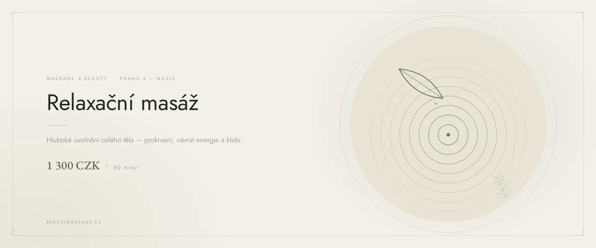

Массаж тела · Прага 4
Расслабляющий массаж в Праге
Час, в котором ничего не нужно решать. Медленные плавные движения, тёплое ароматическое масло и завершающий массаж головы, на котором большинство клиентов засыпают.
Что такое релаксирующий массаж
Релаксирующий массаж — который часто называют антистрессовым — не нацелен на конкретное больное место. Его задача переключить тело из режима постоянной готовности в состояние покоя. Поэтому работа идёт медленно, плавно и в предсказуемом ритме: мозг перестаёт следить за тем, что будет дальше, и нервная система наконец расслабляется.
Я использую тёплое ароматическое масло, аромат которого вы выбираете в начале. Массаж проходит по всей спине, ногам, рукам и шее и завершается расслабляющим массажем головы. Именно он обычно оказывается самым сильным впечатлением — снимает напряжение, о котором большинство даже не подозревает.
Как проходит массаж
- Выбор аромата и настройка Вы выбираете ароматическое масло. Я приглушаю свет и включаю тихую музыку.
- Спина и шея Длинные плавные движения по всей спине. Здесь дыхание впервые замедляется.
- Ноги и руки Продолжаю на конечностях, в том же медленном ритме без резких переходов.
- Массаж головы Завершение — голова, виски и шея. Большинство клиентов на нём засыпают.
Эффект релаксирующего массажа
- глубокое успокоение нервной системы
- облегчение при длительном стрессе и напряжении
- заметно лучший сон уже в ночь после массажа
- расслабление скованных плеч и шеи
- замедление пульса и дыхания, снижение внутреннего беспокойства
- общее улучшение кровотока и ощущение лёгкости
Кому подходит
Релаксирующий массаж идеален, если вы давно живёте в стрессе, плохо спите, чувствуете себя истощёнными или просто нуждаетесь в часе полного покоя. Антистрессовый массаж — ещё и прекрасный подарок тому, кто никогда не находит времени на себя.
Когда массаж не проводится
- высокая температура, острое воспаление или инфекция
- тромбоз и воспаление вен
- свежая травма или открытые раны
- аллергия на используемые ароматические масла
- онкологическое заболевание в активном лечении
Сомневаетесь? Позвоните мне до записи по номеру +420 721 761 411, и мы всё обсудим.
Цена релаксирующего массажа
Частые вопросы
Чем релаксирующий массаж отличается от классического?
Классический массаж работает глубже в мышце и решает вопрос конкретных скованных участков. Релаксирующий медленнее и мягче и нацелен на нервную систему, а не на мышцу.
Можно ли выбрать аромат масла?
Да. В начале я предлагаю выбрать из нескольких ароматических масел — от успокаивающей лаванды до бодрящих цитрусов.
Входит ли массаж головы?
Да, расслабляющий массаж головы входит в каждый часовой релаксирующий массаж и завершает его.
Как часто ходить на релаксирующий массаж?
При длительном стрессе оптимально раз в две-четыре недели. Регулярность здесь работает намного лучше, чем один длинный массаж раз в год.
Можно ли после массажа за руль?
Да, но дайте себе несколько спокойных минут. После глубокого расслабления реакция какое-то время может быть медленнее.
Запишитесь на релаксирующий массаж
Студия находится в Праге 4 — Нусле, недалеко от Панкраца и Вышеграда. Запись онлайн займёт минуту.